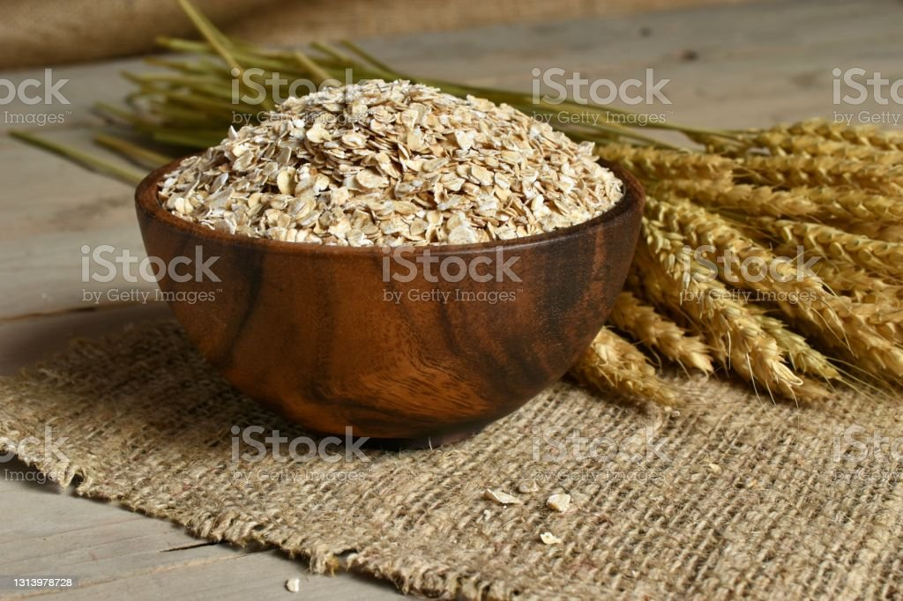

Blended Baked Oats

Description
Who says eating your morning oatmeal has to be boring?
Try these blended baked oats made with banana, egg, and
almond milk. A really ripe banana adds sweatness. It
reminds me of a muffin.
Ingredients
- Cooking Spray
- 1 cup rolled oats
- 1 large banana
- 1 large egg
- 1 teaspoon baking powder
- 1/8 teasponn salt
- 1/2 cup almond milk
- other ingredients
Steps
-
Preheat oven to 350 degrees F. Spray two
8-ouce ramekins with cooking spray on the
bottom and sides.
-
Combine oats, banana, egg, baking power, salt
, almond milk, maple syrup, other ingredients
in a blender. Blend until all is combined.
-
Bake in the preheated oven until firm, about 25 minutes.